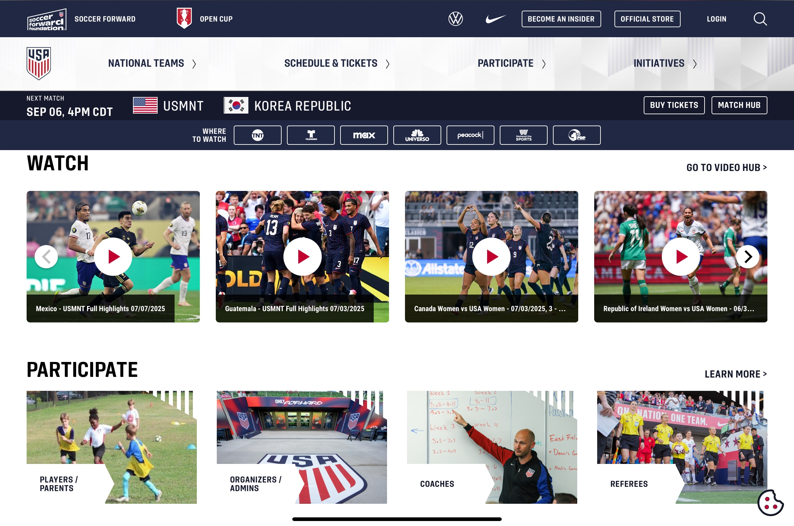
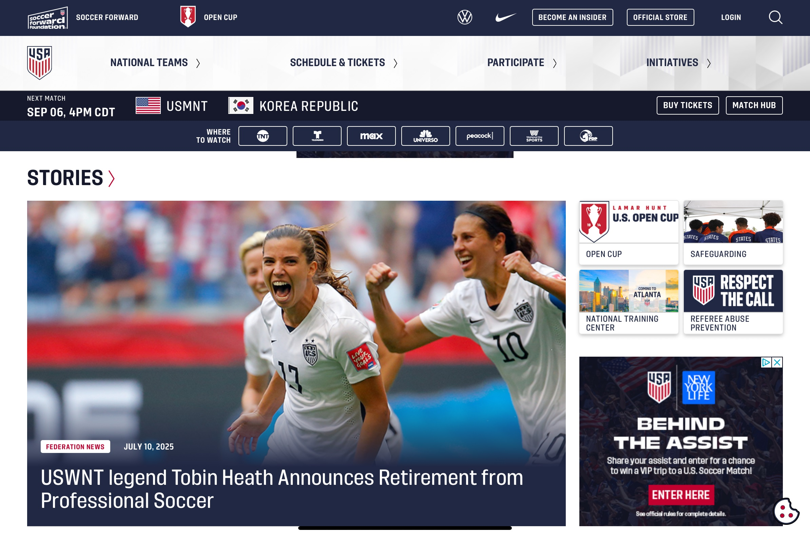
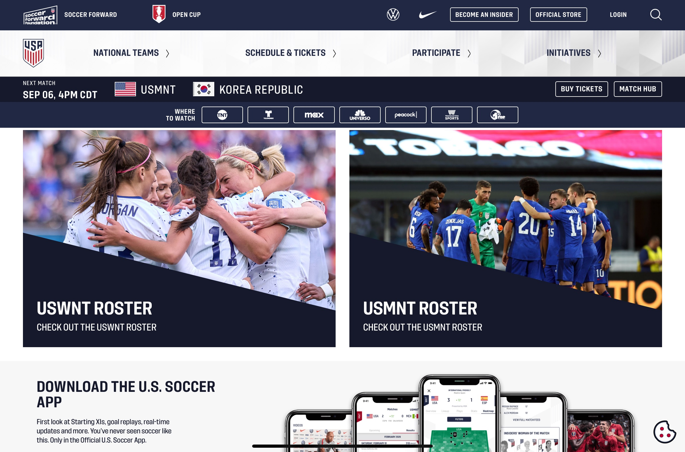

Week 1 CRAP Analysis
Source: US Soccer WebsiteContrast
The website utilizes contrasting colors and sizes on the page to enhance readability. The primary text is predominantly in navy blue, set against a white background for enhanced readability and visual appeal. Additionally, links are rendered in red font, providing a contrasting element to the more commonly used navy font. This red font makes links stand out to the viewer, increasing their likelihood of being clicked and leading to the associated content. Image and font sizes are larger for lead stories, which provides contrast to smaller fonts and images throughout the page.

Repetition
Brand colors of navy blue, red, and white are utilized repetitively on the page. This repetition provides branding and consistency to the page and creates a clean theme throughout. Related links are formatted in a consistent pattern as well, as they are of equal image or link size and pattern. The shapes of related images and links are also the same size as their peer content, providing more themed repetition throughout the page.
Alignment
Related links and information are well aligned with one another, making them easy to find. This alignment also creates a better understanding of the page’s various components and assists the reader in easily understanding and navigating the page. The navy-blue header never collapses from the page, keeping the most used information at the top of the page, regardless of where a user scrolls. This feature not only serves as an example of alignment on the page itself, but it also combines the principle of contrast, by ensuring navy blue is always against the white backdrop.
Proximity
Related links, concepts, and information are grouped within proximity to one another in a way which will make sense to the reader. This prevents the site’s users from scrambling to find the information they are searching for and creates an organized visual display that is more appealing to visitors. Upcoming events are listed alongside how the event will be accessible via links to ticketing and television partners, providing another great example of close proximity of themes.
